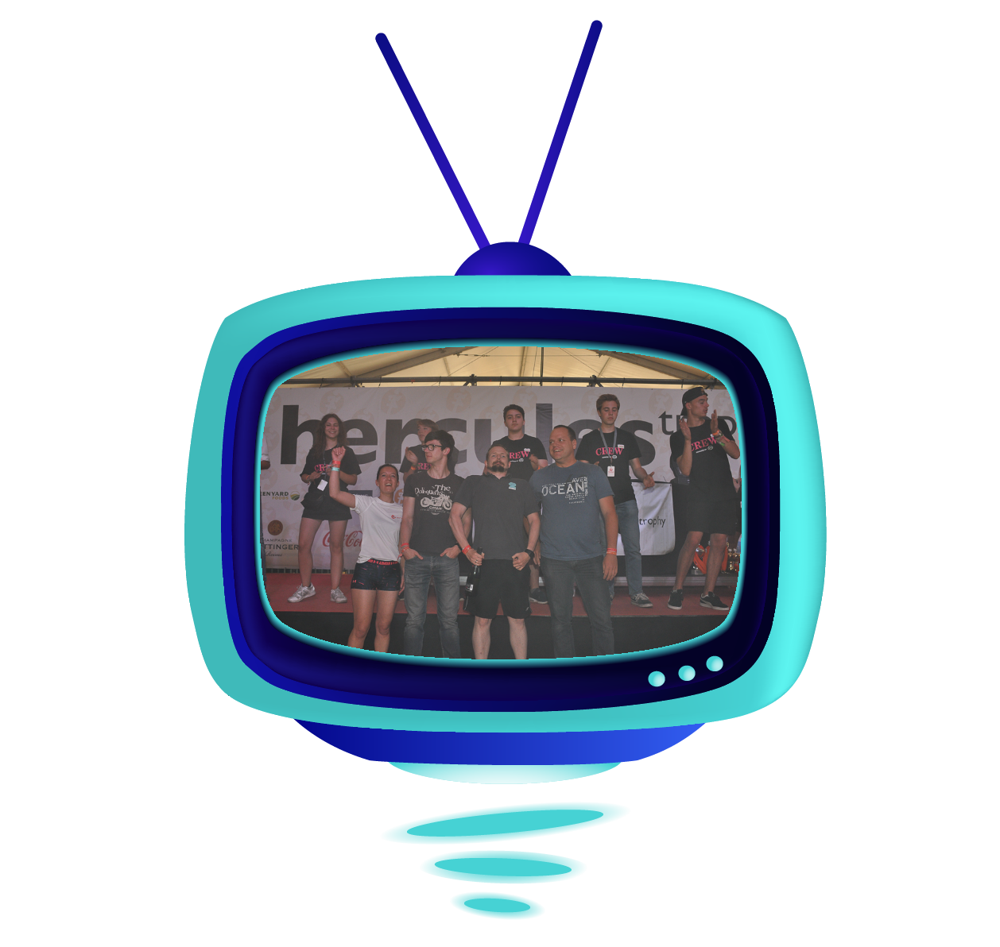

Werken bij 2Commit
Een job met de creativiteit & flexibiliteit van een start-up en de stabiliteit van een grote groep?
Dat is wat we met 2commit kunnen bieden! Als nieuwe entiteit binnen de Contribute Groep (Cronos),
zijn we op zoek naar gedreven consultants die mee de schouders onder het nieuwe initiatief willen zetten!
Ben jij een Microsoft ontwikkelaar die ook eens buiten de lijntjes durft te tekenen en eens
gaat kijken wat de open-source tools te bieden hebben?
Ben jij op zoek naar een tof team, waar ruimte is voor zelfontplooiing? Kijk dan zeker eens
of onderstaande vacatures u interesseren!
